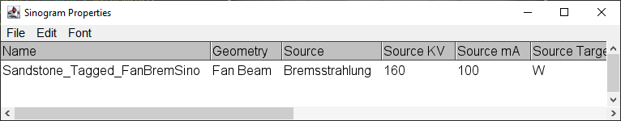
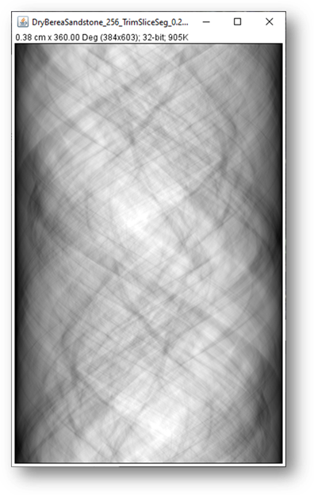

The suggested views are the minimum required for correct sampling. Lower views will reduce the resolution of slices reconstructed from the sinogram. Higher views may improve S/N in reconstructed slices.
Fan beam plugins calculate the correct detector size and source-to sample distance from the source-to-detector and magnification and display it FYI in the dialog.
Description of the dialog fields
Target - the x-ray source target(anode),
KV - the x-ray source accelerating potential.
mA - the x-ray source electron beam current.
KeV Bins - specifies the energy resolution of the simulation. Execution time is directly proportional to the number of bins
Min KeV - the simulation x-ray low energy limit. Set this value to the lowest x-ray energy transmitted by the filter.
Filter Material - the foil filter to be used
Filter Thickness - the foil thickness, can be zero.
Source to detector(cm) - the distance in centimeters between the x-ray source and the detector.
Magnification - the desired magnification, must be greater than 1. Magnifications slightly greater than 1 will produce sinograms of slightly greater than half of the input 2D image. The other half is behind the detector!
Detector Formula - the detector scintillator material as Atom1:Count1:Atom2:Count2... e.g. Cs:1:I:1 for Cesium Iodide.
Detector Thickness - the detector scintillator thickness in centimeters.
Detector Density - the detector density in gm/cc.
Pad Image - embeds non-square images in a square zero-filled field.
Scale to 16-bit - multiply the sinogram by 6000 and convert from float to 16-bit.
Note: The dialog field information is preserved in the header of sinograms saved as tiff files. Use ImageJ Image->Show Info(ctrl-i) to view or use the "Sinogram Properties" plugin to write the field data to a results window.

A Sinogram example
Additional Information
All projectors compute total attenuation, the sum of attenuations from coherent, incoherent, photoelectric, and pair-production processes. The "detected" intensity does not include that from scatter, fluorescence or other processes.
Monochromatic projectors use ray sums through the image linear attenuation data to produce the projection at each angle. A transformation is applied to rotate the source point(s) and detector points about the center of the 2D image when computing the ray sums. The image data is not interpolated.
Polychromatic projectors operate on tagged images, each tag is a reference to a material composition and density. The projectors simulate a bremsstrahlung intensity distribution by breaking the scan into a series of monochromatic scans with the appropriate source intensity for each energy interval. The resulting scans are combined to create a polychromatic result. Characteristic x-ray emission lines are neglected.
Fan beam projectors neglect regions outside the input 2D image i.e. the source to detector "air" path.
Output
Click the "OK" button to create the sinogram with the requested number of view angles. Bremsstrahlung images may take some time since each energy bin is scanned. Parallel, monochromatic scans are pretty quick.

A Sinogram example
1. Proper reconstruction of a monochromatic sinogram will return the original 2D slice attenuations plus some noise. Quantitative reconstruction of a bremsstrahlung sinogram will depend on sample composition, experimental technique and carefully applied post-processing sinogram beam-hardening correction.